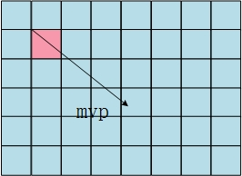
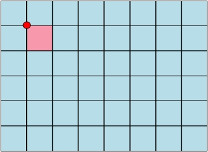
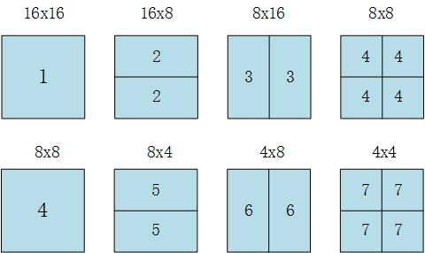
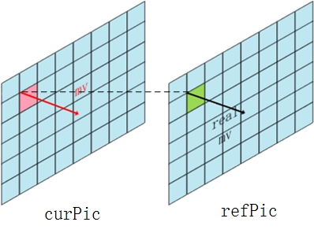
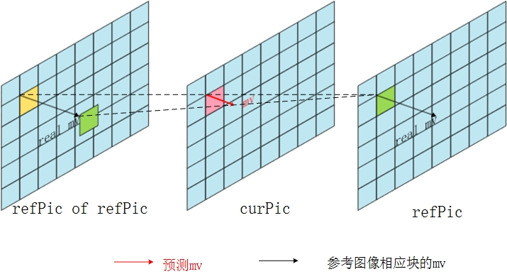
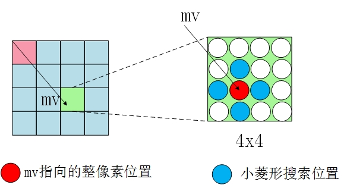
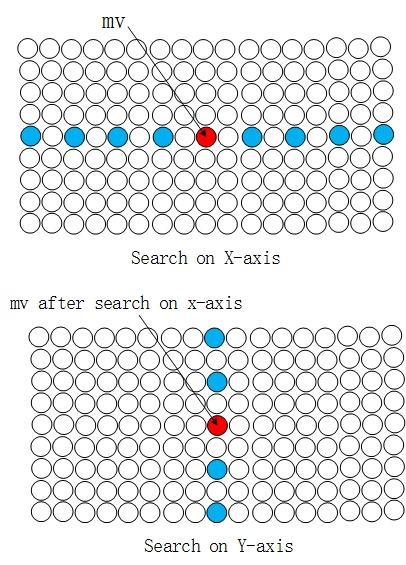
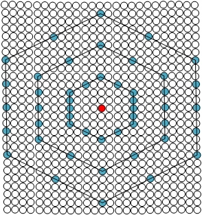
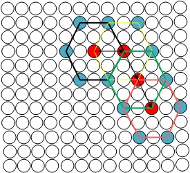
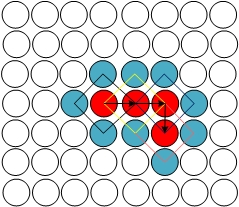

通过相邻块的预测得到mvp后，会以mvp为基础搜索最佳的匹配块，UMHexagonS就是h.264中用的一种搜索算法。
UMHexagonS是一种整像素搜索算法，也就是搜索过程中，参考图像一直都是原来的重构图像，并没有使用经过插值的图像进行搜索。
首先UMHexagonS会根据相关信息去得到比较有可能的mv，（然后用小菱形搜索到该区域去搜索该区域中的最佳mv，这种情况会在下面注明，至于如何才算最佳，请参照http://www.cnblogs.com/TaigaCon/p/3790218.html）
由于UMHexagonS是一种整像素搜索算法，所以会存在对分数的mv取整的情况，此时取整是指把mv对齐到某个像素上，消去分数部分
首先需要选取合适的搜索起点，有以下几种起点的选择
1.mvp
由于还是整像素搜索，所以这里需要对mvp取整，得到的整数的mv后采用小菱形搜索以得到比较优秀的mv。

2.原点
原点，即mv为0，即当前块的位置（然后采用小菱形搜索）

3.上层块mv
参考下图，如果当前块为8x8，那么覆盖当前块的16x8块就是其上层块
运动搜索中，分块模式有7种

模式4的上层模式为2，模式7的上层模式为4
4.共同位置块mv，取上一参考图像与当前块相同位置的块的mv,然后取整
5.共同位置参考mv通过参考图像距离计算后得到的mv，然后取整
6.最后还采用一次小菱形搜索
这里的小菱形搜索主要为了对上面3、4、5预测后得到的最佳mv再采用一次小菱形搜索以得到该区域内最佳mv
小菱形搜索就是把mv的x,y分别+1，-1后得到的新mv，然后各自对比得到其中最优的mv

Early Termination
通过上面的步骤得到最优的搜索起点后，需要计算该mv的匹配满意程度，以跳转做不同的后续搜索处理，该过程叫Early Termination。
Early Termination由于涉及到数学上的分析，所以会在后面的章节再细述。
Early Termination有两个个跳转出口，分别代表不同的匹配满意程度：
- Extended Hexagon-based Search（六边形模板反复搜索） 满意
- the third step with a small search pattern（小菱形模板反复搜索） 很满意
但是如果在不甚满意的情况下，Early Termination会不作跳转，直接执行下一步
UMH搜索
经过上面步骤后，得到其中最佳的搜索起点的mv，如果该mv经Early Termination判断为不甚满意，会以该mv为中心，直接开始UMH搜索。UMH搜索有以下步骤
1.Unsymmetrical-cross search（非对称十字搜索）
非对称十字搜索会先后对x轴与y轴进行搜索，y轴的搜索范围是x轴的一半，这是因为在一般的视频中，镜头的纵向移动距离会比较短，横向移动距离会比较长，而且比较常见。搜索时，横轴的搜索范围是search range，而纵轴会是它的一般。

2.Spiral search（螺旋搜索）
螺旋搜索采用的是full search（全搜索）的搜索方法，但是搜索步长只有24，相当于5x5的区域。而全搜索会对整个搜索范围进行搜索。
3.Uneven Multi-Hexagon-grid Search（不规律六边形模板搜索）
这种搜索方式是以当前mv指向的像素点为圆心，一圈一圈地往外搜索，一旦在某个圈内搜索到更佳的位置，立刻停止搜索，否则搜索完整个搜索范围

4.Extended Hexagon-based Search（六边形模板反复搜索）
不同于上一个搜索方式，这种搜索方式是以当前最佳mv指向的像素点为圆心，进行一次六边形模板搜索，一旦搜索到某个更佳的位置，则以此位置为圆心，重新进行一次六边形模板搜索。如果没有比圆心更佳的位置，则终止搜索。

5.the third step with a small search pattern（小菱形模板反复搜索）
类似Extended Hexagon-based Search（六边形模板反复搜索）的搜索方式，不过把六边形换成了菱形

以上可参照jvt-G016
JM8.6
/*!
- \brief用非对称十字形多层次六边形格点搜索算法进行运动搜索
- FastIntegerPelBlockMotionSearch: fast pixel block motion search
- this algrithm is called UMHexagonS(see JVT-D016),which includes
- four steps with different kinds of search patterns
- \par Input:
- pel_t** orig_pic, // <– original picture
- int ref, // <– reference frame (0… or -1 (backward))
- int pic_pix_x, // <– absolute x-coordinate of regarded AxB block
- int pic_pix_y, // <– absolute y-coordinate of regarded AxB block
- int blocktype, // <– block type (1-16x16 … 7-4x4)
- int pred_mv_x, // <– motion vector predictor (x) in sub-pel units
- int pred_mv_y, // <– motion vector predictor (y) in sub-pel units
- int* mv_x, // –> motion vector (x) - in pel units
- int* mv_y, // –> motion vector (y) - in pel units
- int search_range, // <– 1-d search range in pel units
- int min_mcost, // <– minimum motion cost (cost for center or huge value)
- double lambda // <– lagrangian parameter for determining motion cost
- \par
- Three macro definitions defined in this program:
- EARLY_TERMINATION: early termination algrithm, refer to JVT-D016.doc
- SEARCH_ONE_PIXEL: search one pixel in search range
- SEARCH_ONE_PIXEL1(value_iAbort): search one pixel in search range,
but give a parameter to show if mincost refeshed- \ Main contributors: (see contributors.h for copyright, address and affiliation details)
- Zhibo Chen chenzhibo@tsinghua.org.cn
- JianFeng Xu fenax@video.mdc.tsinghua.edu.cn
- \date : 2003.8
/
int // ==> minimum motion cost after search
FastIntegerPelBlockMotionSearch (pel_t* orig_pic, // <– not used
int ref, // <– reference frame (0… or -1 (backward))
int list,
int pic_pix_x, // <– absolute x-coordinate of regarded AxB block
int pic_pix_y, // <– absolute y-coordinate of regarded AxB block
int blocktype, // <– block type (1-16x16 … 7-4x4)
int pred_mv_x, // <– motion vector predictor (x) in sub-pel units MV_pred_space 中值预测矢量
int pred_mv_y, // <– motion vector predictor (y) in sub-pel units
int* mv_x, /* –> motion vector (x) - in pel units
按照H.264标准算法进行的运动矢量预测得到MV_pred
指的是SetMotionVectorPreditor函数预测的MV
和中值预测的区别在于SetMotionVectorPreditor函数预测的MV的参考邻块和当前块必须参
考同一个参考帧，而中值预测的邻块则没有这个要求，二者可能一样，也可能不同*/
int* mv_y, // –> motion vector (y) - in pel units
int search_range, // <– 1-d search range in pel units
int min_mcost, // <– minimum motion cost (cost for center or huge value)
double lambda) // <– lagrangian parameter for determining motion cost
{
static int Diamond_x[4] = {-1, 0, 1, 0};//对应不同算法 菱形插值
static int Diamond_y[4] = {0, 1, 0, -1};
static int Hexagon_x[6] = {2, 1, -1, -2, -1, 1};//六角形插值
static int Hexagon_y[6] = {0, -2, -2, 0, 2, 2};
static int Big_Hexagon_x[16] = {0,-2, -4,-4,-4, -4, -4, -2, 0, 2, 4, 4, 4, 4, 4, 2};
static int Big_Hexagon_y[16] = {4, 3, 2, 1, 0, -1, -2, -3, -4, -3, -2, -1, 0, 1, 2, 3};//大六角形插值
int pos, cand_x, cand_y, mcost;
pel_t (get_ref_line)(int, pel_t, int, int, int, int);
int list_offset = ((img->MbaffFrameFlag)&&(img->mb_data[img->current_mb_nr].mb_field))? img->current_mb_nr%2 ? 4 : 2 : 0;
pel_t ref_pic = listX[list+list_offset][ref]->imgY_11;//img->type==B_IMG? Refbuf11 [ref+((mref==mref_fld)) +1] : Refbuf11[ref];
int best_pos = 0; // position with minimum motion cost
int max_pos = (2search_range+1)(2*search_range+1); // number of search positions
int lambda_factor = LAMBDA_FACTOR (lambda); // factor for determining lagragian motion cost
int mvshift = 2; // motion vector shift for getting sub-pel units
int blocksize_y = input->blc_size[blocktype][1]; // vertical block size
int blocksize_x = input->blc_size[blocktype][0]; // horizontal block size
int blocksize_x4 = blocksize_x >> 2; // horizontal block size in 4-pel units
int pred_x = (pic_pix_x << mvshift) + pred_mv_x; // predicted position x (in sub-pel units)
int pred_y = (pic_pix_y << mvshift) + pred_mv_y; // predicted position y (in sub-pel units)
int center_x = pic_pix_x + *mv_x; // center position x (in pel units)
int center_y = pic_pix_y + *mv_y; // center position y (in pel units)
int best_x, best_y;
int check_for_00 = (blocktype==1 && !input->rdopt && img->type!=B_SLICE && ref==0);
int search_step,iYMinNow, iXMinNow;
int i,m, iSADLayer;
int iAbort;
int N_Bframe = input->successive_Bframe;
float betaSec,betaThird;
int height=((img->MbaffFrameFlag)&&(img->mb_data[img->current_mb_nr].mb_field))?img->height/2:img->height;
//===== set function for getting reference picture lines =====
if ((center_x > search_range) && (center_x < img->width -1-search_range-blocksize_x) &&
(center_y > search_range) && (center_y < height-1-search_range-blocksize_y) )
{
get_ref_line = FastLineX;
}
else
{
get_ref_line = UMVLineX; //无运动矢量限制，需像素拓展
}
//////allocate memory for search state//////////////////////////
//初始化搜索标记
memset(McostState[0],0,(2search_range+1)(2*search_range+1)*4);
///////Threshold defined for early termination///////////////////
//为早期终止设定门限值
if(ref>0)
{
if(pred_SAD_ref!=0)
{
betaSec = Bsize[blocktype]/(pred_SAD_refpred_SAD_ref)-AlphaSec[blocktype];
betaThird = Bsize[blocktype]/(pred_SAD_refpred_SAD_ref)-AlphaThird[blocktype];
}
else
{
betaSec = 0;
betaThird = 0;
}
}
else
{
if(blocktype==1)
{
if(pred_SAD_space !=0)
{
betaSec = Bsize[blocktype]/(pred_SAD_spacepred_SAD_space)-AlphaSec[blocktype];
betaThird = Bsize[blocktype]/(pred_SAD_spacepred_SAD_space)-AlphaThird[blocktype];
}
else
{
betaSec = 0;
betaThird = 0;
}
}
else
{
if(pred_SAD_uplayer !=0)
{
betaSec = Bsize[blocktype]/(pred_SAD_uplayerpred_SAD_uplayer)-AlphaSec[blocktype];
betaThird = Bsize[blocktype]/(pred_SAD_uplayerpred_SAD_uplayer)-AlphaThird[blocktype];
}
else
{
betaSec = 0;
betaThird = 0;
}
}
}
/检测中值预测矢量*****//其实就是把得到的mv_pred取整得到的预测矢量/
// MV_pred_space 中值预测矢量
//check the center median predictor
cand_x = center_x ;
cand_y = center_y ;
mcost = MV_COST (lambda_factor, mvshift, cand_x, cand_y, pred_x, pred_y);//通过计算候选mv所占用的bit得到mv_cost = lambda * bit_of_mv
mcost = PartCalMad(ref_pic, orig_pic, get_ref_line,blocksize_y,blocksize_x,blocksize_x4,mcost,min_mcost,cand_x,cand_y);//cost = mv_cost + SAD
McostState[search_range][search_range] = mcost;
if (mcost < min_mcost)
{
min_mcost = mcost;
best_x = cand_x;
best_y = cand_y;
}
iXMinNow = best_x;
iYMinNow = best_y;
for (m = 0; m < 4; m++) //小菱形检测
{
cand_x = iXMinNow + Diamond_x[m];
cand_y = iYMinNow + Diamond_y[m];
SEARCH_ONE_PIXEL
}
/原点检测**********************/
if(center_x != pic_pix_x || center_y != pic_pix_y)
{
cand_x = pic_pix_x ;
cand_y = pic_pix_y ;
SEARCH_ONE_PIXEL
iXMinNow = best_x;
iYMinNow = best_y;
for (m = 0; m < 4; m++)//小菱形检测
{
cand_x = iXMinNow + Diamond_x[m];
cand_y = iYMinNow + Diamond_y[m];
SEARCH_ONE_PIXEL
}
}
/上层块预测矢量检测********/
if(blocktype>1)//
{
cand_x = pic_pix_x + (pred_MV_uplayer[0]/4);
cand_y = pic_pix_y + (pred_MV_uplayer[1]/4);
SEARCH_ONE_PIXEL
if ((min_mcost-pred_SAD_uplayer)<pred_SAD_uplayerbetaThird)
goto third_step;
else if((min_mcost-pred_SAD_uplayer)<pred_SAD_uplayerbetaSec)
goto sec_step;
}
/相应块预测********************/
//coordinate position prediction
if ((img->number > 1 + ref && ref!=-1) || (list == 1 && (Bframe_ctr%N_Bframe) > 1)) //for debug
{
cand_x = pic_pix_x + pred_MV_time[0]/4;
cand_y = pic_pix_y + pred_MV_time[1]/4;
SEARCH_ONE_PIXEL
}
/相邻参考帧预测***************/
//prediciton using mV of last ref moiton vector
if (input->PicInterlace == FIELD_CODING)//场编码，用最近的场MV预测
{
if ((list==0 && ref > 0) || (img->type == B_SLICE && list == 0 && (ref==0 ||ref==2 ) ))
//Notes: for interlace case, ref==1 should be added
{
cand_x = pic_pix_x + pred_MV_ref[0]/4;
cand_y = pic_pix_y + pred_MV_ref[1]/4;
SEARCH_ONE_PIXEL
}
}
else
{ //多参考帧预测时，用另一帧的MV预测
if ((list==0 && ref > 0) || (img->type == B_SLICE && list == 0 && ref==0 ))
//Notes: for interlace case, ref==1 should be added
{
cand_x = pic_pix_x + pred_MV_ref[0]/4;
cand_y = pic_pix_y + pred_MV_ref[1]/4;
SEARCH_ONE_PIXEL
}
}
//small local search
iXMinNow = best_x;
iYMinNow = best_y;
for (m = 0; m < 4; m++)//小菱形搜索
{
cand_x = iXMinNow + Diamond_x[m];
cand_y = iYMinNow + Diamond_y[m];
SEARCH_ONE_PIXEL
}
//early termination algrithm, refer to JVT-D016
//根据SAD值判断需要跳转的步骤，SAD较小时转到步骤3，较大时转到步骤2，很大时转到步骤1
EARLY_TERMINATION
if(blocktype>6)
goto sec_step;
else
goto first_step;
first_step: //Unsymmetrical-cross search 不甚满意
iXMinNow = best_x;
iYMinNow = best_y;
for(i=1;i<=search_range/2;i++)//水平方向搜索
{
search_step = 2*i - 1;
cand_x = iXMinNow + search_step;
cand_y = iYMinNow ;
SEARCH_ONE_PIXEL
cand_x = iXMinNow - search_step;
cand_y = iYMinNow ;
SEARCH_ONE_PIXEL
}
//垂直方向搜索，注意垂直方向搜索点比水平方向少，考虑到了水平方向较垂直方向重要
for(i=1;i<=search_range/4;i++)
{
search_step = 2*i - 1;
cand_x = iXMinNow ;
cand_y = iYMinNow + search_step;
SEARCH_ONE_PIXEL
cand_x = iXMinNow ;
cand_y = iYMinNow - search_step;
SEARCH_ONE_PIXEL
}
//early termination algrithm, refer to JVT-D016
//在这里也进行中止、跳转检测，考虑到一般序列中含有大量水平、垂直方向的运动。
EARLY_TERMINATION
iXMinNow = best_x;
iYMinNow = best_y;
//螺旋搜索，类似全搜索法，只搜索前25点，相当于5×5区域全搜索
for(pos=1;pos<25;pos++)
{
cand_x = iXMinNow + spiral_search_x[pos];
cand_y = iYMinNow + spiral_search_y[pos];
SEARCH_ONE_PIXEL
}
//early termination algrithm, refer to JVT-D016
EARLY_TERMINATION
// Uneven Multi-Hexagon-grid Search
//超六边形模板搜索，（多圈）
for(i=1;i<=search_range/4; i++)
{
iAbort = 0;
for (m = 0; m < 16; m++)
{
cand_x = iXMinNow + Big_Hexagon_x[m]*i;
cand_y = iYMinNow + Big_Hexagon_y[m]*i;
SEARCH_ONE_PIXEL1(1)
}
if (iAbort)
{
//early termination algrithm, refer to JVT-D016
EARLY_TERMINATION
}
}
// 六边形模板反复搜索（也可以用大菱形代替），搜索完后进入第三步骤
sec_step: //Extended Hexagon-based Search 满意
iXMinNow = best_x;
iYMinNow = best_y;
for(i=0;i<search_range;i++)
{
iAbort = 1;
for (m = 0; m < 6; m++)
{
cand_x = iXMinNow + Hexagon_x[m];
cand_y = iYMinNow + Hexagon_y[m];
SEARCH_ONE_PIXEL1(0)
}
if(iAbort)
break;
iXMinNow = best_x;
iYMinNow = best_y;
}
// 小菱形模板反复搜索，得到最终的运动矢量
third_step: // the third step with a small search pattern 很满意
iXMinNow = best_x;
iYMinNow = best_y;
for(i=0;i<search_range;i++)
{
iSADLayer = 65536;
iAbort = 1;
for (m = 0; m < 4; m++)
{
cand_x = iXMinNow + Diamond_x[m];
cand_y = iYMinNow + Diamond_y[m];
SEARCH_ONE_PIXEL1(0)
}
if(iAbort)
break;
iXMinNow = best_x;
iYMinNow = best_y;
}
*mv_x = best_x - pic_pix_x;
*mv_y = best_y - pic_pix_y;
return min_mcost;
}